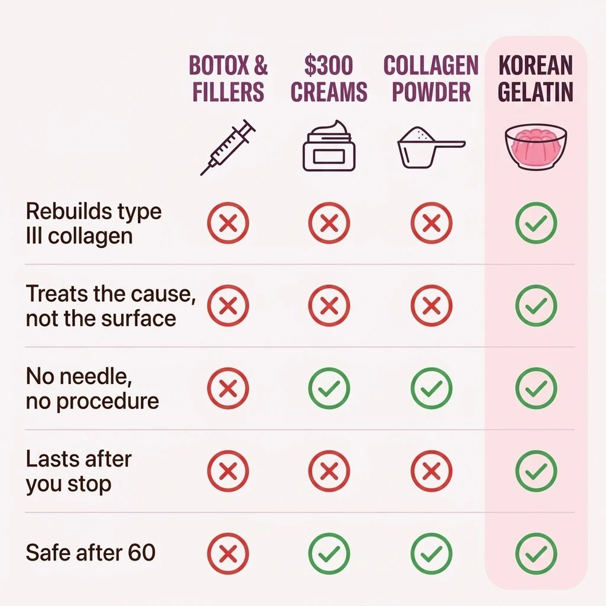
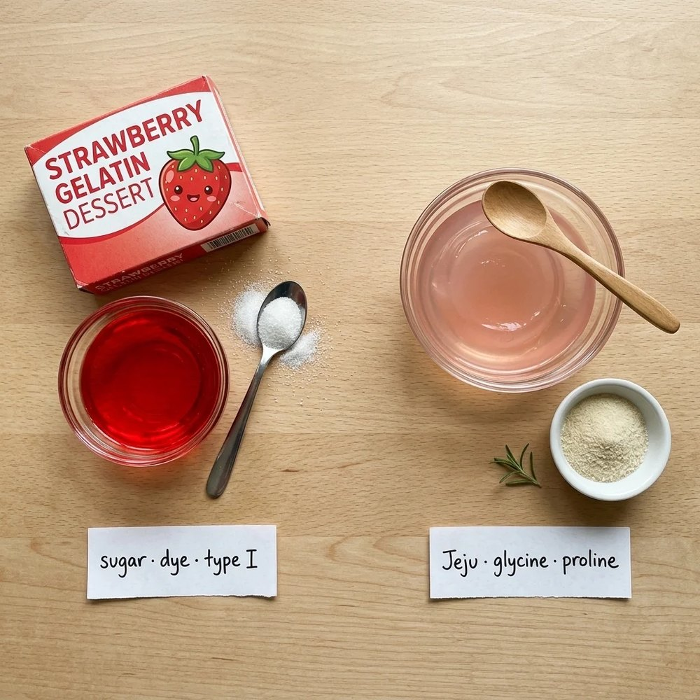
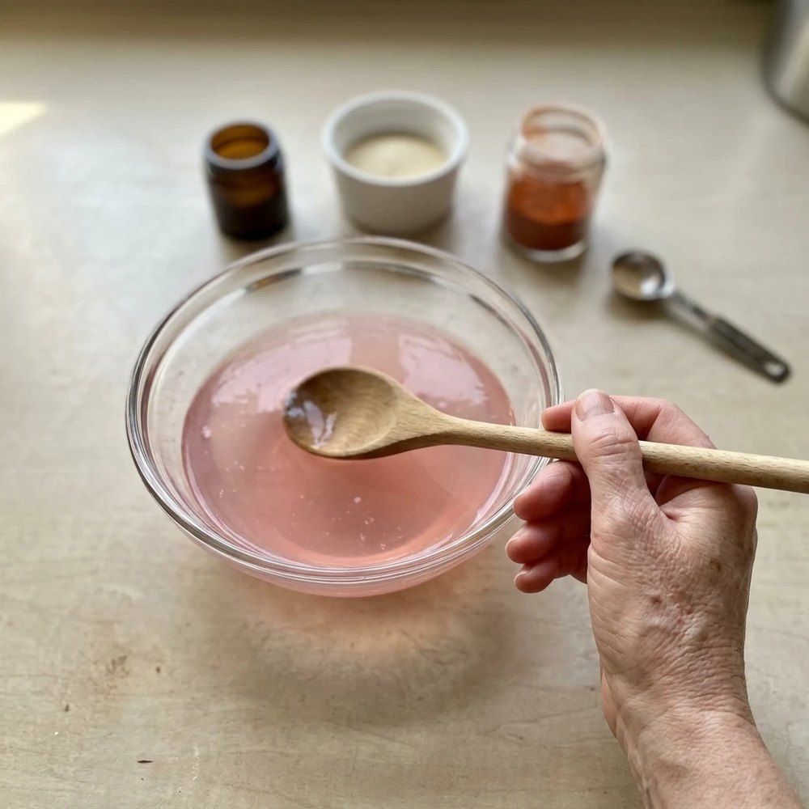
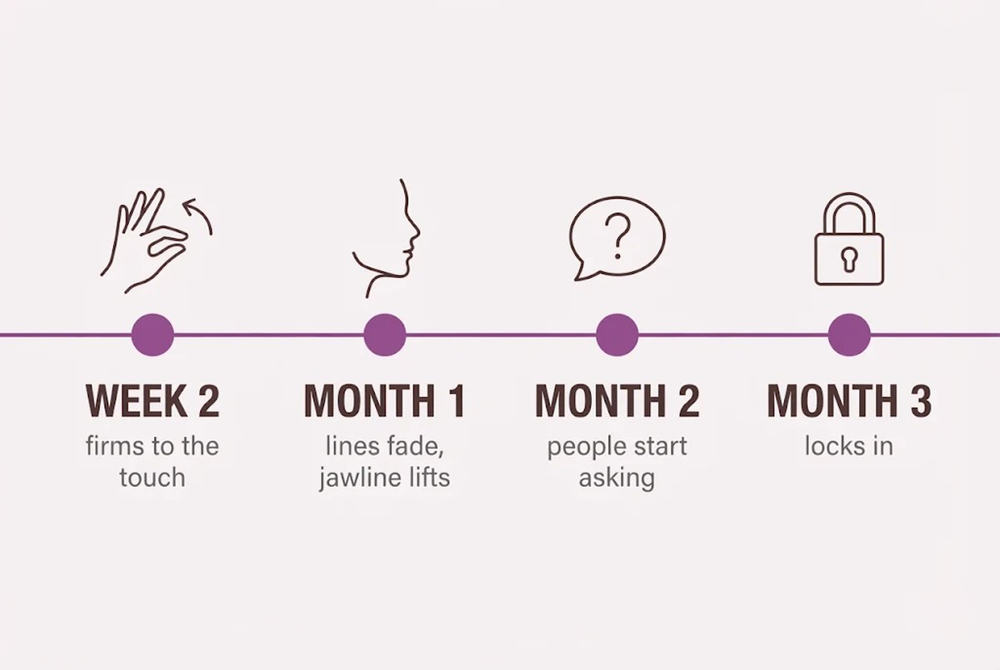

I know the exact day I stopped liking photos.
It was my granddaughter's birthday. Someone raised a phone, I turned my face away on instinct. And realized I'd been doing that for years. Turning away. Asking for another one. Deleting. And without noticing, I'd started doing the same thing with people: avoiding the eyes of anyone who'd known me before.
Until then I thought wrinkles were just genes and bad luck. And that skincare was a scam: a whole drawer of serums that promised everything and delivered a week of glow. If you've felt that way, I understand. I was you.
What changed was an interview a friend sent me. A dermatologist (the kind who makes her living from Botox and lasers) recorded it for television, and the segment never aired. She opens by saying that what she's about to tell “goes against my own wallet.” And a few minutes in, she says the sentence I haven't been able to get out of my head since:
“After 50, your skin didn't lose collagen. It lost the right type of collagen.”
I'd never heard that. There isn't one collagen; there are several. The one that keeps skin firm and makes it bounce back when you press it is type III: baby collagen. The stiff scar on your knee is type I: the patch collagen. And it's type III your body quietly stops making after 30. Harvard measured it: between 25 and 55, it drops by more than 75%.

Only one of the four rebuilds type III. And keeps it.
Think about it: if one jar of collagen fixed it, no woman would ever buy a second one. The collagen market is worth billions.
It isn't vanity. It isn't neglect. It's a factory that switched off, and nobody had the decency to tell you.
Do this now, before you read on. Pinch the skin on the back of your hand for 3 seconds and let go. Did it snap back? Or did the fold stay for a moment, like a creased sheet? That fold is type III leaving. If it stayed, keep reading. The rest of this article is about you.
That's when every product in my drawer finally made sense. And so did the reason none of them lasted.
5 Reasons Your Skin Keeps Sagging, No Matter What You Try
(and the one thing that, in her patients, changed it)
5.Retinol works on the top board.
It speeds up turnover: sheds the old, shows the new. A glow for a few weeks. But underneath it rebuilds nothing. It's sanding and varnishing the top board of a floor that's rotting below. That's why, when you stop, it comes back worse than it was.
4.The more you inject, the less your body makes.
A filler pushes from the outside. And while it's there, your body produces even less of its own. Until it runs out, and the skin drops lower than before. Inject, firm, stop, collapse. If you've lived that yo-yo and blamed yourself, it wasn't you. It was the design of the thing.
Each round ends lower than the last, while your own production keeps falling.
3.The collagen you put on at night wakes up on your pillow.
The collagen molecule is too big to pass through skin. It sits on the surface, and in the morning it's on your pillowcase. She shows it with a membrane and a red dye, on camera, in 20 seconds: the other side stays clean. I never bought another jar.
Where last night's collagen cream actually went.

Same name. Wrong collagen.2.The gelatin from the box doesn't count.
This was the one that surprised me most, because I've eaten gelatin my whole life. The boxed kind is sugar, dye and type I. The one she uses comes from an island in Korea where women reach 80 with skin the rest of the world tries to copy in a cream. And the reason it works is two amino acids she explains in half a minute, with a soft gelatin and a firm one side by side on the counter. When the soft one starts to set, you understand.
Same word on the label. Not the same thing.

It only works made this way.1.It only works prepared one way.
On its own, the gelatin turns the factory back on. But it's what she adds to the bowl that makes the difference between months and weeks. And that keeps the new collagen from being destroyed the moment it's born. She does it on camera, step by step. I'm not going to write it here, and it isn't a trick: I tried it from memory before I'd watched, and I got it wrong.
The bowl, and the three things behind it she only shows on camera.
What her patients report, and where

- Week 2 Skin firms to the touch. The pinch starts to snap back.
- Month 1 Fine lines fade; the jawline lifts.
- Month 2 Someone who hasn't seen you in a while asks what you've been doing.
- Month 3 It “locks in”: the factory runs on its own, and the result stops depending on anything.
Neck, jowls, chest and hands (the places a turtleneck hides and no cream treats) are where women notice it first.
One honest piece of advice: take a photo today, before you watch. Face and neck, no filter, in the light from a window. Skin changes too slowly to notice in the everyday mirror. A few weeks from now, that photo is what will make you stop and say, “oh.”